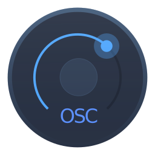

Open Stage Control is a libre desktop OSC bi-directionnal control surface application. It's built with HTML, JavaScript & CSS and run as a Node / Electron web server that accepts any number of Chrome / Chromium / Electron clients.
Features
- multiplatform desktop server application with built-in client interface
- mouse & multitouch interfaces compatible with Chrome 49 or later
- all the widgets you need !
- built-in live editor
- clients synchronization
- deep customization possibilities such as theming and messages filtering
- true control over what the widgets send
Supported platforms
The server can run on all platforms supported by Electron. Any client that can run chrome browser can connect to the server.
License & credits
Copyleft © Jean-Emmanuel @ AMMD. This program is released under the GNU/GPL3 license.
It relies on the use of several libraries :
- Node.js
- Electron
- osc.js
- socket.io
- browserify
- exorcist
- express
- node-sass
- jQuery
- jQuery-UI (draggable, resizable & sortable)
- Font Awesome
- source-map